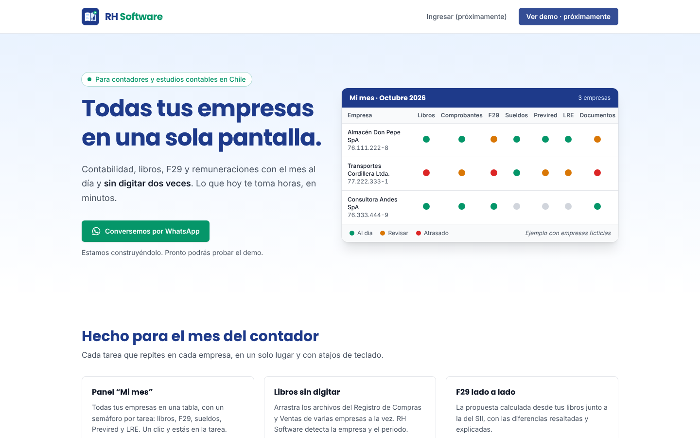
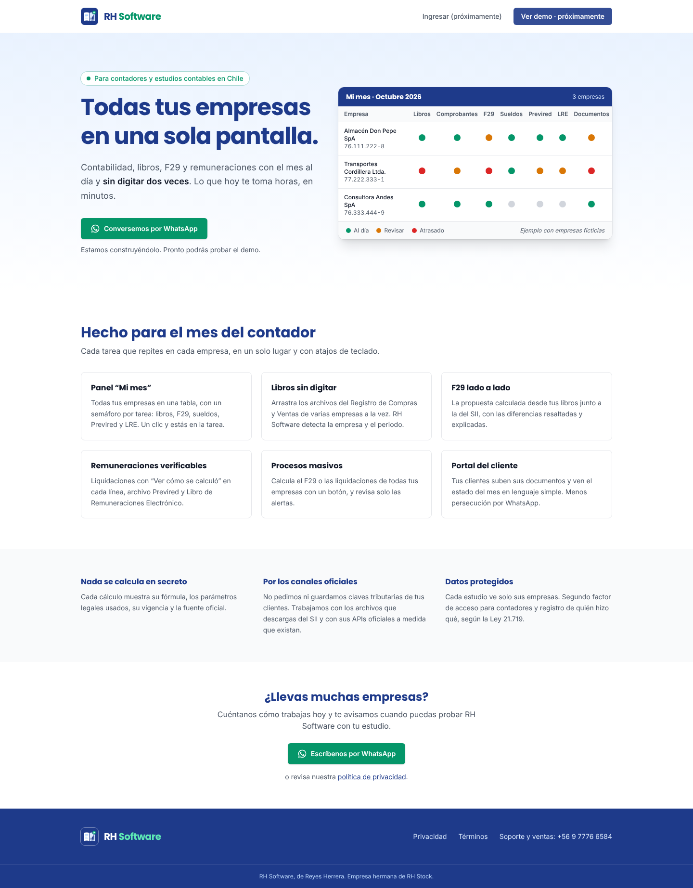
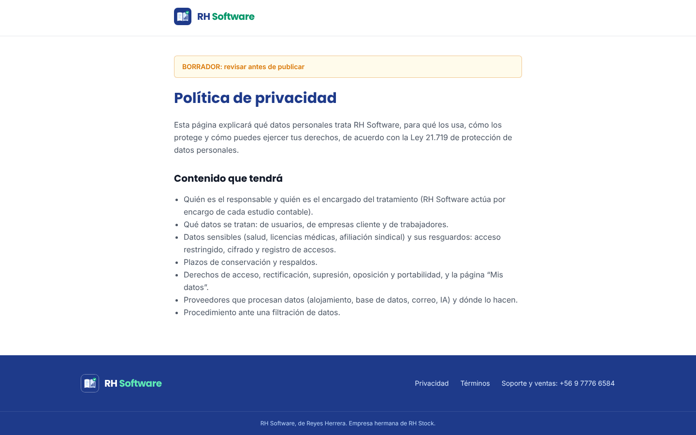
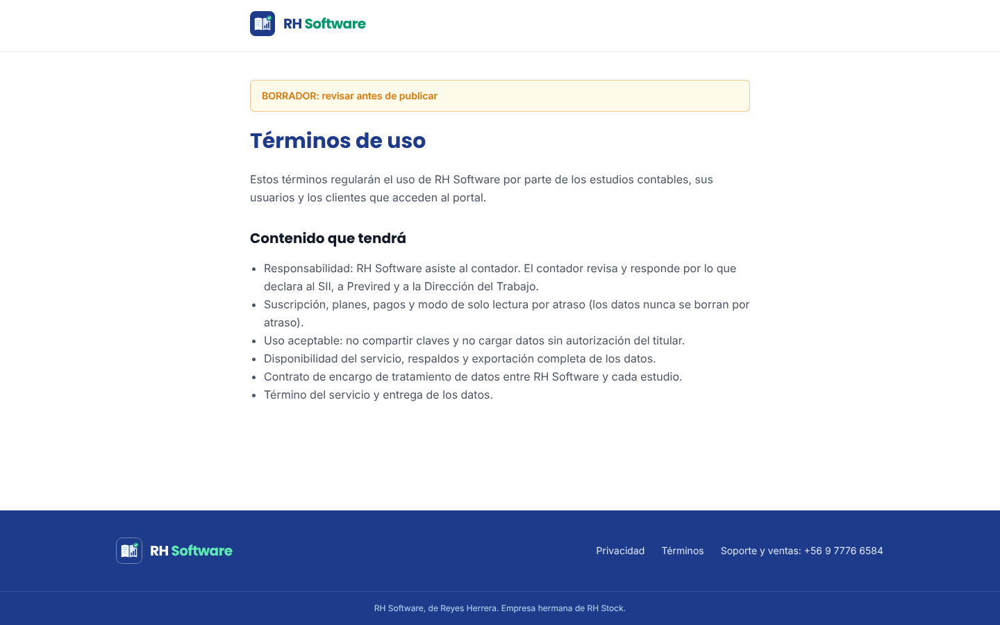
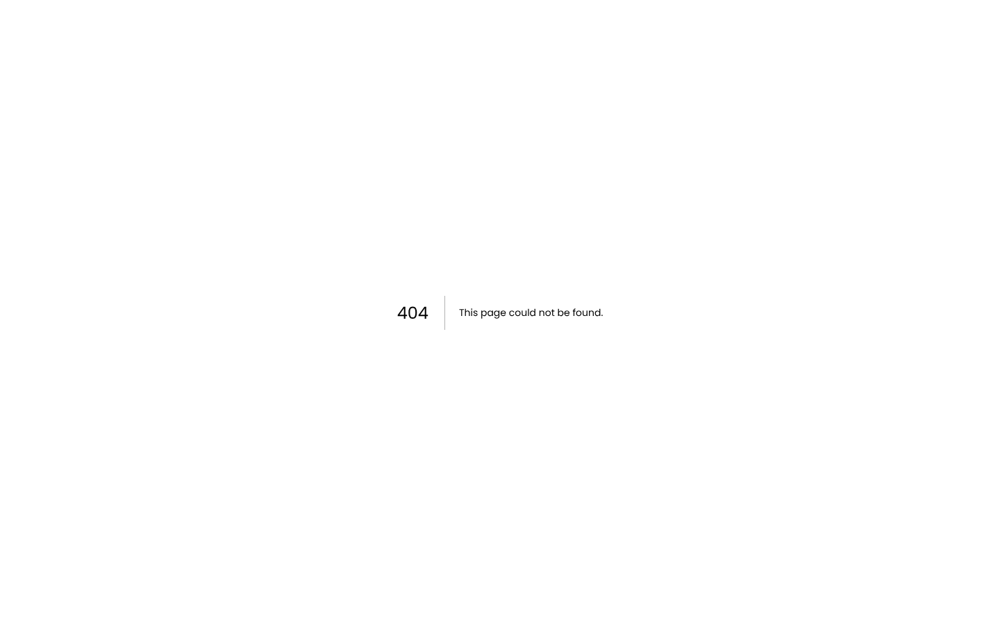
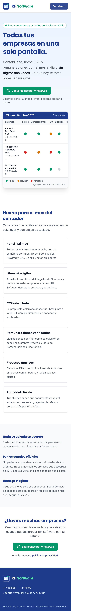
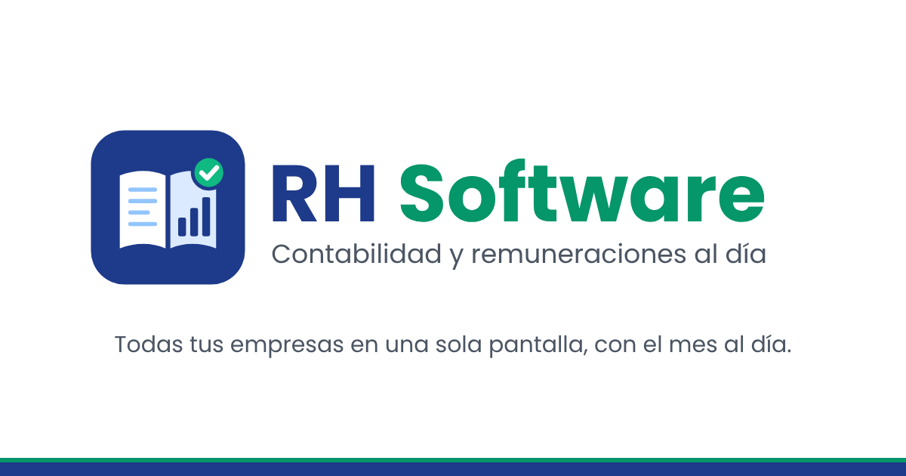

Video del recorrido
Portada, desplazamiento hasta el pie, privacidad y términos.
1. 01-portada.png
Portada: logo, promesa, vista de ejemplo del panel “Mi mes” y botón de WhatsApp. Revisa que los colores y el logo se vean como la marca.

2. 02-portada-completa.png
Portada completa (toda la página hacia abajo): funciones, confianza y pie con el número de soporte.

3. 03-privacidad.png
Política de privacidad: solo el esqueleto, marcado BORRADOR. El texto final va en la Fase 1 y lo revisa un abogado.

4. 04-terminos.png
Términos de uso: esqueleto marcado BORRADOR. Incluye que el contador revisa y responde por lo que declara.

5. 05-pagina-no-existe.png
Estado de error: una dirección que no existe muestra la página 404 (en la Fase 1 le pondremos la marca).

6. 06-portada-celular.png
Portada en celular (390×844): también se ve bien, aunque la app para el contador es de escritorio.

7. 07-imagen-para-compartir.png
Imagen que aparece al compartir el link por WhatsApp, correo o redes (1200×630).

8. 08-icono.png
Ícono de la pestaña del navegador y del acceso directo en el teléfono.